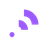

<!doctype html>
<meta charset="utf-8">
<link rel="stylesheet" href="style.css">
<main>
  <header><div><b>FEED</b><small>clean feeds · readable preview</small></div></header>
  <button id="find">Detect feed / page type</button>
  <div id="stats" class="stats" hidden>
    <div class="stat"><b id="type">—</b><span>Type</span></div>
    <div class="stat"><b id="raw">0</b><span>Links</span></div>
    <div class="stat"><b id="items">0</b><span>Unique</span></div>
  </div>
  <pre id="out">Ready.</pre>
  <button id="reader" disabled>Open Richmack Feed Reader</button>
  <div class="row"><button id="copy" disabled>Copy RSS URL</button><button id="generate">Generate RSS</button></div>
  <button id="rawfeed" disabled>Open raw RSS</button>
</main>
<script src="app.js"></script>
